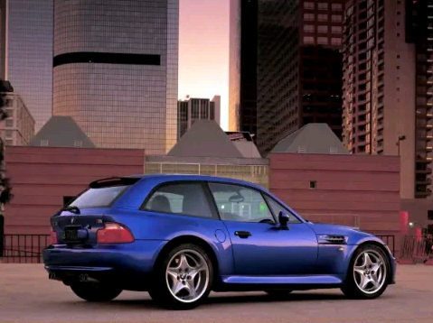

Ferrari
Ferrari Honda
Honda Ford
Ford Suzuki
Suzuki Lamborghini
Lamborghini Lexus
Lexus Jaguar
Jaguar BMW
BMW GMC
GMC Mercedes-Benz
Mercedes-BenzTop 10 BMW of all time
Here’s a list of our top 10 BMW of all time
The iconic M division of BMW was founded in 1972 to tackle their motorsport projects, (largely to beat Ford's dominant touring car success in the late 60s). With just 35 employees, it has since grown to manufacturing its own models within the BMW range as well as spawning and inspiring sub halo products such as M Sport trims and M Performance models. The origins and details of the iconic M Badge are well known. But what are the best of all the BMW Ms to be manufactured by the racing subsidiary? In no particular order because they are all heroic cars, here is my top 10 best M Cars.

Z3M COUPELaunched in 1996, affectionately known as the ‘breadvan’, perhaps a marmite car but residual values are currently proving not necessarily in a bad way. In the flesh, this is one of the best examples of the caricature wide stance synonymous with BMW M. These rare beasts always catch my eye when they beasts burble past. |
|---|
1M COUPEAnother residual value success, this very rare M coupe (badged 1M rather than M1 to distinguish between the original M car) is probably the best visual representation of the blistered wide arches bulging from the bodyshell. In this case to accommodate the extra wide track of largely M3 underpinnings. In plain English, it looks exceptionally aggressive. |
|---|
M1The original M car, launched in 1978 and yet to be replaced although definitely inspiring the i8. This car was a revelation in its day with sharp Italian design and everyday useable German engineering. If one of these low slung pop up headlights rarities drives past, it will certainly turn your head. |
|---|
E34 M5This generation of M5 is cool because of the film Ronin. If you haven’t watched it and there is an ounce of petrol running through your veins, please do. |
|---|
E61 M5This generation of M5 was one of the most bonkers incarnations to date. A five litre screaming V10 originally engineered for racing was crammed into a practical spacious saloon or in this case Touring. The pure howl of this engine is right up there with the sound of a more exotic super car and it is therefore oozing with character. With the touring you can terrify the dog too. |
|---|
F16 X6MAnother marmite product of BMW M, the latest F16 generation of the X6M will leave you in no doubt of its merit if you ever get the chance to feel this near two tonne SUV prove physics wrong and accelerate from 0-60 in 4.2 seconds. Yep, 4.2. |
|---|
E46 M3 CSLOne of the most celebrated M3 incarnations. This was one of the most extreme and track focused M cars, with a warning disclaimer given upon delivery advising the tyres really are best suited to warm, dry surfaces. Any car with a warning letter is cool. |
|---|
E30 M3For many the epitome of the motorsport success for BMW M, this gorgeous 4 cylinder M car was a dominant force in the touring car world and is a welcome nostalgia for BMW’s current strives in touring car racing today. |
|---|
 850 CSIIn my book any car with pop headlights and no C pillar harks back to an era of effortless cool and joi de virve. This car is worth a nod as it is an M car in all but name and has helped spawn the latest latest generation of M Performance cars. Most notable by the ‘Powered by M’ designation proudly etched onto the engine cover. |
|---|
F10 M6Asking around BMW Bristol, this is widely regarded as one of the best looking current M cars on sale. A vast improvement on the previous bangel era M6 with far more torque from a pioneering Twin turbo V8, a larger fuel tank and a generally more usable, great looking large coupe. I can think of no better M car to take down onto the continent. |
|---|